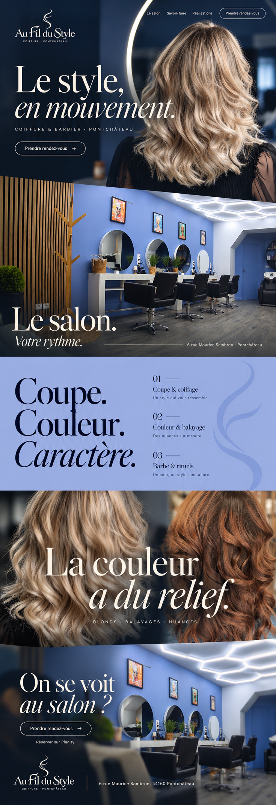
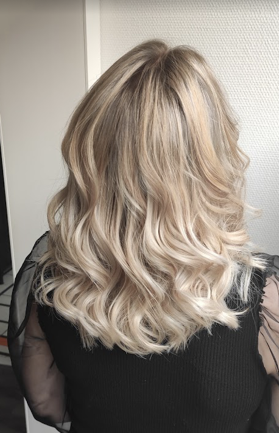
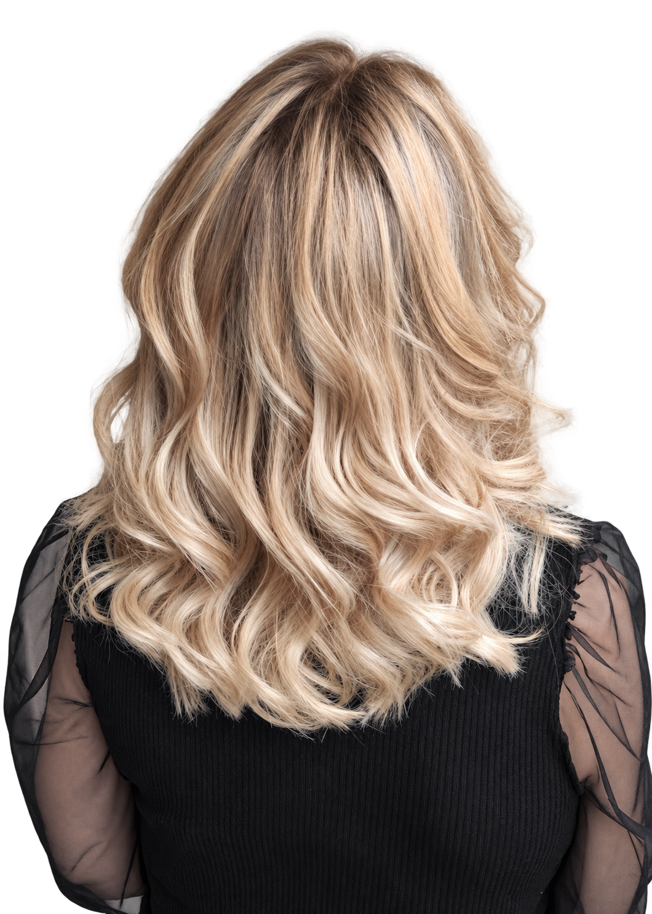

Identidade e direção aprovadas
Le style,
en mouvement.
Um salão reconhecível, cabelo em primeiro plano e luz que conduz ao espaço real. Este guia reúne a referência escolhida e os arquivos de produção do kit.
Sem vídeo. A composição em movimento usa planos do próprio site. A revisão visual e interativa em navegador permanece UNVERIFIED pela indisponibilidade da prévia.
01 · Modelo travado
Hero e corpo do modelo 1.

Estudo visual gerado aprovado. Esta imagem não é uma captura do site implementado.
| Ordem | Cena | Decisão |
|---|---|---|
| 1 | Le style, en mouvement. | Foto, primeiro plano e arco separado. |
| 2 | Le salon. Votre rythme. | Interior real em toda a seção. |
| 3 | Coupe. Couleur. Caractère. | Única cena lisa, pervenche. |
| 4 | La couleur a du relief. | Resultados reais em dois planos encostados. |
| 5 | On se voit au salon ? | Foto real, Planity e rodapé na mesma cena. |
02 · A marca
Um traço de cabelo.
Uma assinatura.

PNG aprovado preservado; SVGs nativos em contornos, sem bitmap incorporado. Símbolo e avatar derivados da mesma logo.


03 · Cores
A arquitetura inspira a paleta.
04 · Tipografia
Bodoni Moda
Le style,
en mouvement.
Títulos em regular 400 e itálico pontual. Arquivos locais, sem CDN.
Instrument Sans
Le salon · Savoir-faire · Réalisations
Uma família para navegação, texto e botões, nos pesos 400, 500 e 600. TTFs, WOFFs e licenças OFL incluídos.
O lettering da logo é uma composição própria, não uma fonte de alfabeto completo.
05 · Origem da fotografia
Original e primeiro plano.

Original recebido, preservado byte a byte. Usado na galeria e no fundo de resultados.

Derivação de campanha assistida por imagem, com alfa. Não é uma nova realização documental.
06 · Roteiros e fontes